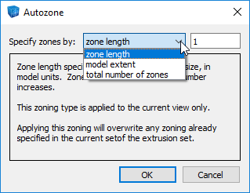

自动网格划分
网格划分是指在构建视图中为每条边指定网格单元数量（或指定边长），和/或在挤出视图中更改挤出阶段尺寸的过程。更改边长会影响网格划分，因此如果集中已包含任何带非结构化网格的块体，该块体将被删除。带结构化网格的块体可以动态重新划分网格。
单击工具栏上的自动网格划分工具（ ）即可使用自动网格划分，此时会显示此处所示的对话框。
）即可使用自动网格划分，此时会显示此处所示的对话框。


图 1：自动网格划分对话框
从下文介绍的三种自动网格划分模式中选择一种。
网格单元长度
- 以模型单位指定所需的网格单元边长。该数值增大时，网格单元尺寸也随之增大。此网格划分类型仅应用于当前视图。应用此网格划分将覆盖挤出集当前视图中已指定的任何网格划分。
模型范围
- 指定沿模型范围施加的网格单元数量（在构建视图中使用时，模型范围指两个维度中较大的一个）。该数值增大时，网格单元尺寸随之减小。此网格划分仅应用于当前视图。应用此网格划分将覆盖挤出集当前视图中已指定的任何网格划分。
网格单元总数
指定模型中的网格单元总数，计算时考虑构建视图中初始已划分网格的块体以及挤出视图中设定的几何（因此挤出深度必须非零）。此选项仅在块体带结构化网格时可用并适用。要启用该选项：
- 确保网格划分参数未设置为仅使用非结构化网格，
- 分割或移除所有不规则块体和多边形，
- 用默认网格单元数量为所有多边形划分块体，
- 指定挤出深度。
网格单元尺寸将随网格单元总数的增加而减小。无论哪个视图处于活动（可见）状态，此网格划分都会同时应用于挤出视图和构建视图。应用此网格划分将覆盖挤出集中已指定的任何现有网格划分。
| 这些内容对您有帮助吗？… 版权与免责声明 | FLAC3D © 2019, Itasca | 原文更新于 2020 年 10 月 8 日 |